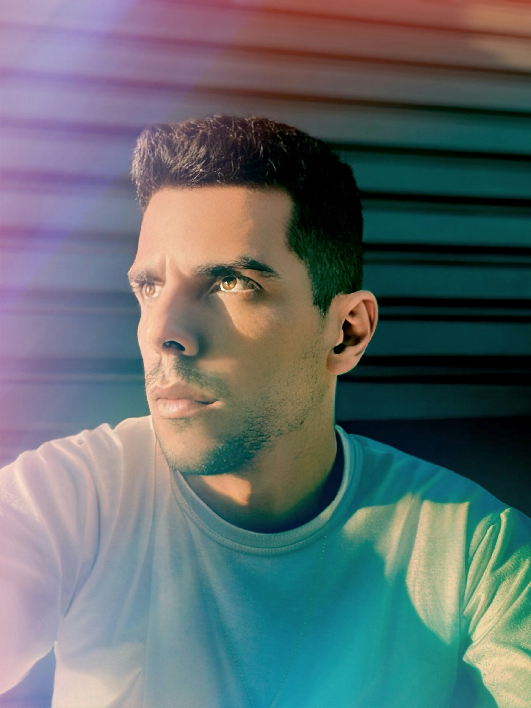

MUITO PRAZER, SOU ERICK CUNHA.
Decidi seguir minha paixão por tecnologia e fazer a transição para o desenvolvimento web.
Ao longo do último ano, me dediquei a estudar as principais ferramentas e linguagens de
programação, como HTML, CSS, JavaScript e React, e desenvolvi projetos pessoais para
aprimorar minhas habilidades práticas.